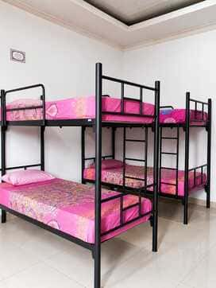
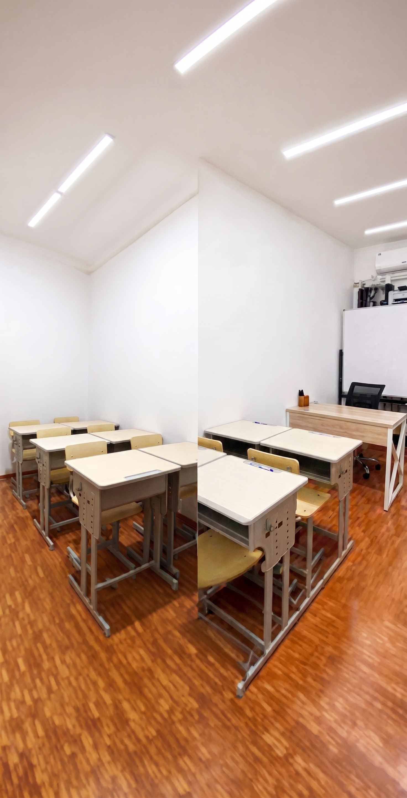
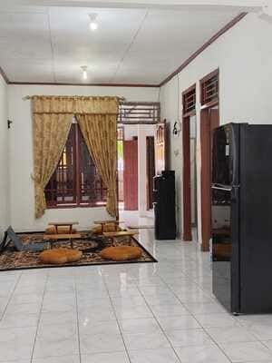

Dibimbing Langsung oleh Syaikh Internasional yang Diakui Dunia
World-Class Scholar

Ketuk foto untuk memperbesar
Di era penuh fitnah digital, berikan putri Anda pondasi iman yang kokoh sekaligus keterampilan masa depan yang membanggakan dunia dan akhirat.
Setiap orang tua pernah gelisah di tengah malam…
"Apakah putri saya akan terjaga imannya?
Apakah dia akan sukses dunia dan akhirat?
Atau justru terbawa arus digital yang semakin liar?"
Kekhawatiran ini bukan berlebihan. Ini adalah amanah suci yang Allah titipkan kepada Anda. Dan kini, ada jawabannya.
Hafalan yang tidak akan hilang seumur hidup. Sanad mutawatir tersambung langsung hingga Rasulullah ﷺ. Bukan hafalan biasa — ini warisan kenabian.
Ijazah Pesantren + Ijazah Negara setara SMP/SMA. Bisa langsung kuliah atau bekerja tanpa kehilangan hafalan Quran-nya.
Digital Marketing, Video Editing, Desain Grafis, Bekam, Ruqyah Syar'iyyah. Putri Anda siap bermanfaat bagi umat.
Ketuk foto untuk memperbesar
Tidak ada laki-laki. Tidak ada gangguan. Hanya fokus ibadah dan ilmu.





Pelajari brosur resmi kami untuk detail program selengkapnya.
Jangan biarkan posisi putri Anda diambil orang lain. Demi menjaga kualitas adab dan hafalan yang intensif, kuota sangat terbatas. Setiap detik yang berlalu adalah kursi yang berkurang.
Komplek Batan Indah, Blok M No. 20, RT 009/RW 004, Banten.
Perumahan Pura Bojonggede Blok F7 No. 44, RT 04/RW 15, Jawa Barat.